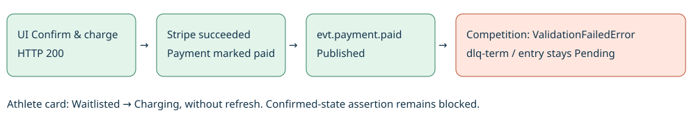
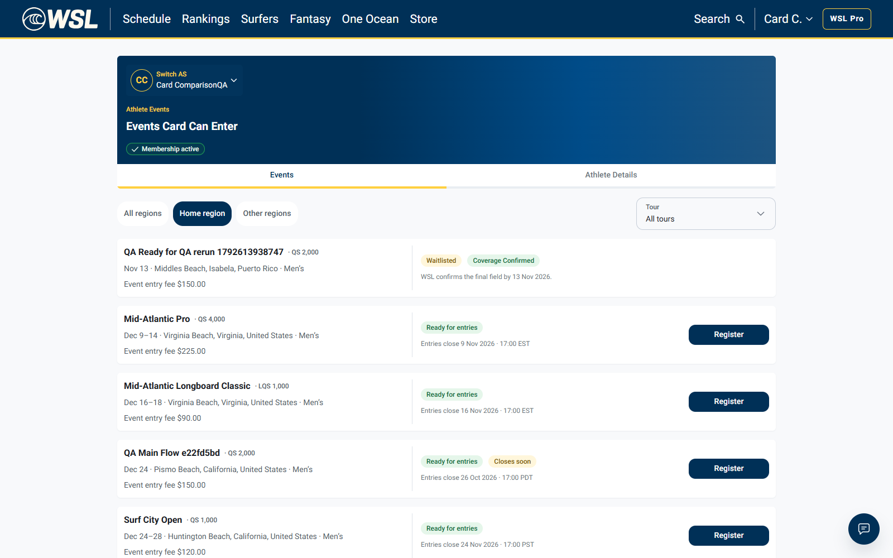
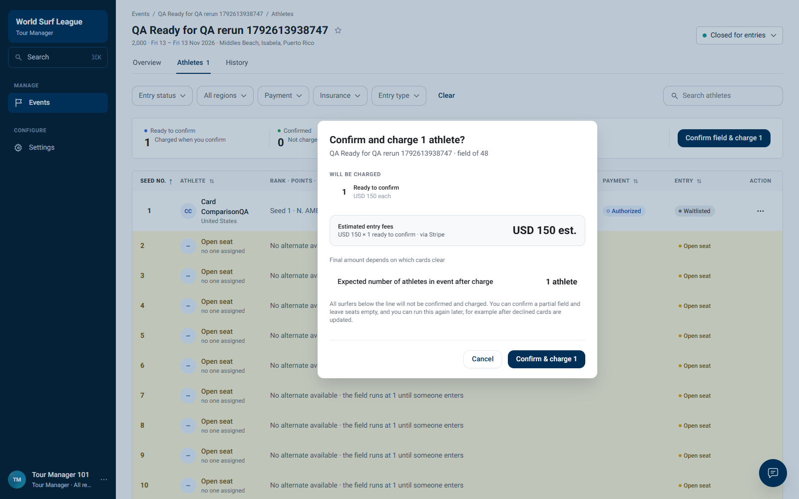
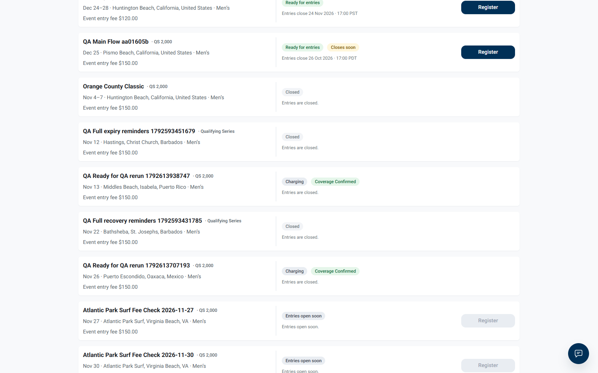
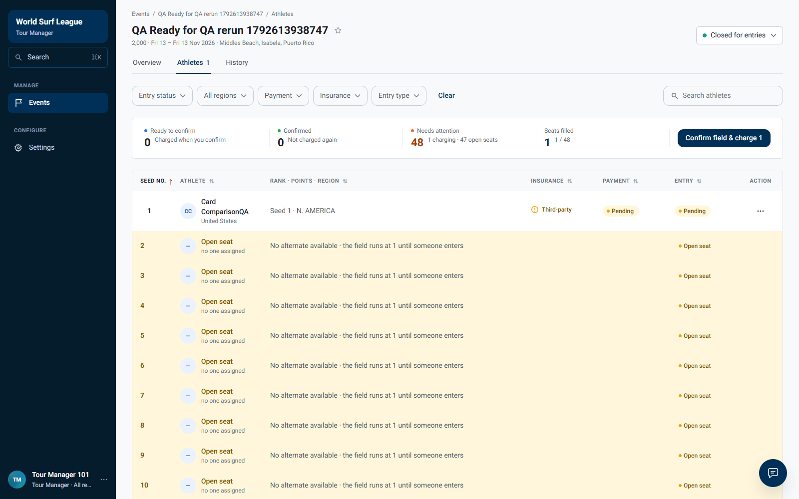

The real UI charge succeeded in Stripe test mode. Competition rejected its published success event with ValidationFailedError / dlq-term. The athlete card updated to Charging without refresh; a Confirmed state was never produced.

Tour Manager: confirmation dialog and final Confirm & charge click
Athlete: mounted card observed without refreshing




# WSL-9589: confirmation and mounted athlete card rerun Result: BLOCKED by payment-success processing in competition. Keep Ready for QA. Do not mark the frontend confirmed-card fix solved or failed from this run. Executed on dev, 21 October 2026, 23:35:49–23:38:21 Cairo. Raw timestamps are UTC. This is a new UI confirmation attempt against a different entry from the earlier blocked confirmation. Each entry was charged once; no repeat charge was sent to the old pending entry. ## What happened in simple words The manager confirmed and charged the athlete through the real UI. Stripe successfully took the TEST payment. Payment recorded it as paid and published the success message. Competition rejected that message with ValidationFailedError and action dlq-term. Consequently the manager roster stayed Pending / Pending, and the athlete card stayed Charging. There was no completed confirmation for the athlete card to display. ## Exact reproduction and observations 1. Use the existing isolated QA event 01a1601d-fc7d-7108-bfc3-827ea10aabcf, QA Ready for QA rerun 1792613938747; athlete 01a15ed1-e7f1-756f-a31e-bb2648c73ed8; entry 01a1601e-c722-75bf-8254-a9b33c50120c. 2. Verify entry history has no earlier charge-started action for this entry. Keep the athlete Events page mounted before the manager action. Initial card: "QA Ready for QA rerun 1792613938747\n· QS 2,000\n\nNov 13 · Middles Beach, Isabela, Puerto Rico · Men’s\n\nEvent entry fee $150.00\n\nWaitlisted\nCoverage Confirmed\n\nWSL confirms the final field by 13 Nov 2026.". 3. Close the event and save the one-athlete seed order through API fixture preparation. Open the manager Athletes tab in a separate authenticated browser context. 4. Click Confirm field & charge 1, inspect the real dialog, then Confirm & charge 1. UI POST /charge returned HTTP 200 at 2026-10-21T20:36:13.322Z, charged=1, skipped=0, confirmationId=01a1602d-c363-7035-9135-2d20ec124852. 5. Bring the athlete page forward and observe for at least 120 seconds, polling the real manager seed-list API approximately every five seconds. The athlete page was never refreshed or navigated after it mounted (mountedWithoutNavigation=true). Its card changed to Charging / Coverage Confirmed. It did not retain Register. 6. Backend never reached Confirmed / Collected within the observation window. Final entry=pending, payment=pending. The final manager screenshot was after refresh; the athlete screenshot was without refresh. 7. Investigate with read-only AWS dev pod/database queries and Stripe retrieval. No events were fabricated or replayed, no database state changed, and no service was restarted or deployed. ## Correlated backend evidence | Layer | Evidence | | --- | --- | | Stripe | pi_3UT6F9Hma49jszOG1h9DX0Qx: status=succeeded; livemode=false; amount_received=15000 minor USD units (USD 150 test payment); latest charge ch_3UT6F9Hma49jszOG1lwAZbaP | | Payment database | Deferred charge 01a1601e-c796-7625-bca6-9dac7a5f1d2c, reference_id=01a1601e-c722-75bf-8254-a9b33c50120c, status=paid, attempt_count=1 | | Payment success outbox | 01a1602d-caf1-76a1-9007-b7b18ac68f6d, subject=evt.payment.paid, created_at=2026-10-21 20:36:16.212860+00:00, published_at=2026-10-21 20:36:16.424125+00:00, attempts=0, last_error=null | | Competition consumer | 2026-10-21T20:36:16+0000, correlation_id=01a1602d-caf1-76a1-9007-b7b18ac68f6d, msg=handler failed, action=dlq-term, reason=terminal: ValidationFailedError, attempt=1 | | Competition / UI | Entry Pending, payment Pending, athlete card Charging | The payment outbox ID exactly matches the competition consumer failure correlation ID. This establishes delivery to the handler and a terminal validation failure, rather than a missing Stripe payment or unpublished outbox row. The precise rejected field/validation rule was not logged in the collected warning, so the underlying code-level cause is not established. The earlier fixture independently shows the same pattern: 01a1601b-fb63-77d4-b2e1-f51be6a04975, Stripe pi_3UT5wjHma49jszOG12QVlGTn, payment paid, event 01a1601c-6086-7507-8007-a88960bd9f70, matching ValidationFailedError consumer log. Both provider confirmations were retrieved read-only and proven livemode=false. ## Acceptance verdict - Manager UI confirmation action: PASS (actual POST /charge HTTP 200). - Real Stripe TEST payment and payment-service paid state: PASS. - Published payment success event: PASS. - Competition applies payment success and confirms entry: FAIL / prerequisite blocker, with correlated warning log. - Mounted card reflects intermediate Charging without refresh: PASS. - WSL-9589 requirement, mounted card changes to Selected / Ready to Compete after successful competition confirmation: BLOCKED, not evaluated because competition never confirmed the entry. Expected: after consuming the valid paid result, competition marks the entry Confirmed / Collected; the mounted athlete card reflects Selected / Ready to Compete without Register and without reload. Observed intermediate update does not certify that final transition. ## Recordings and limits athlete.webm records the real mounted athlete page; tour-manager.webm records actual manager confirmation clicks. Setup closes/saves order via API; database/Stripe readbacks are separate evidence and are not presented as browser actions. Browser observations, API snapshots, confirmation response and history are in results.json. Provider/outbox snapshots and scoped consumer logs are separate JSON files. No application code or global policy changes, no payment retries/refunds, no replay or manual confirmation were performed. The original frontend ticket remains Ready for QA until this dependency is resolved and the final state can be observed.